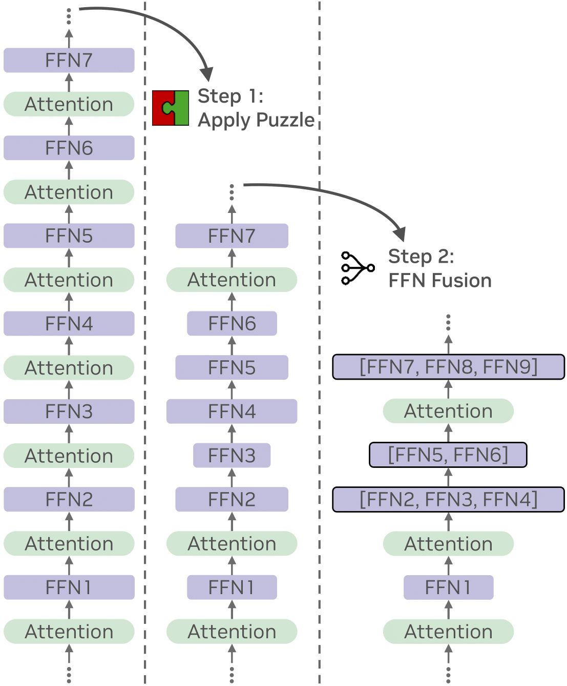
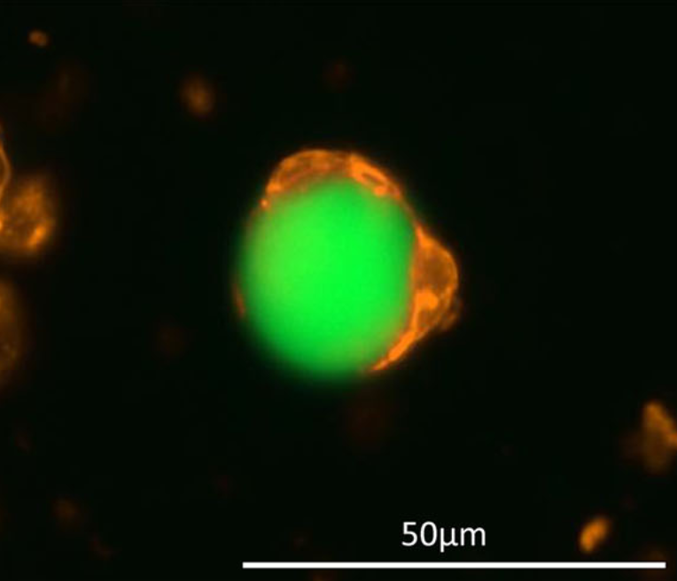
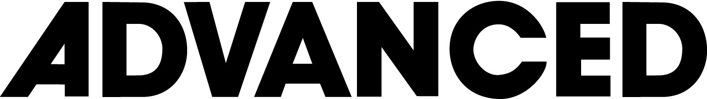
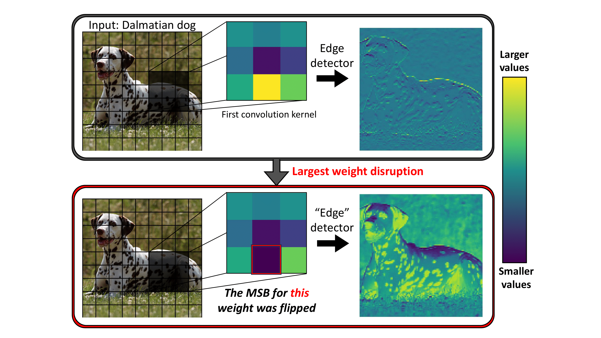

|
Ido Galil I am a Deep Learning Researcher in the Deci group at NVIDIA (formerly Deci AI, acquired by NVIDIA). My work focuses on improving the inference efficiency of large language models (LLMs) and generative AI. I graduated my PhD under Prof. Ran El-Yaniv at the CS faculty, Technion. In my PhD research, I studied deep neural networks’ reliability and safety in computer vision and natural language processing, with an emphasis on uncertainty estimation, selective prediction, and adversarial robustness. |

|
Publications |
|  |
FFN Fusion: Rethinking Sequential Computation in Large Language Models Authors: Akhiad Bercovich · Mohammad Dabbah · Omri Puny · Ido Galil · Amnon Geifman · Yonatan Geifman · Izhak Golan · Ehud Karpas · Itay Levy · Zach Moshe · Najeeb Nabwani · Tomer Ronen · Itamar Schen · Elad Segal · Ido Shahaf · Oren Tropp · Ran Zilberstein · Ran El-Yaniv
TL;DR: FFN Fusion fuses consecutive FFN layers into larger blocks, reducing sequential depth and accelerating inference with minimal accuracy impact. Read More |

|
Padding Tone: A Mechanistic Analysis of Padding Tokens in T2I Models Authors: Michael Toker · Ido Galil · Hadas Orgad · Rinon Gal · Yoad Tewel · Gal Chechik · Yonatan Belinkov
NAACL, 2025 (Oral)
TL;DR: Our work reveals how text-to-image (T2I) diffusion models use “empty” padding tokens, which can still influence generated images depending on model architecture and training. Read More |
|  |
Scaling Up Synthetic Cell Production Using Robotics and Machine Learning Toward Therapeutic Applications Authors: Noga Sharf-Pauker · Ido Galil · Omer Kfir · Gal Chen · Rotem Menachem · Jeny Shklover · Avi Schroeder · Shanny Ackerman  Advanced Biology, 2025 (Journal Cover) TL;DR: We couple robotics with machine learning to optimize and monitor synthetic cell production. We use deep neural networks to assess the synthetic cells' quality. Read More |

|
Puzzle: Distillation-Based NAS for Inference-Optimized LLMs Authors: Akhiad Bercovich · Tomer Ronen · Talor Abramovich · Nir Ailon · Nave Assaf · Mohammad Dabbah · Ido Galil · Amnon Geifman · Yonatan Geifman · Izhak Golan · Netanel Haber · Ehud Karpas · Roi Koren · Itay Levy · Pavlo Molchanov · Shahar Mor · Zach Moshe · Najeeb Nabwani · Omri Puny · Ran Rubin · Itamar Schen · Ido Shahaf · Oren Tropp · Omer Ullman Argov · Ran Zilberstein · Ran El-Yaniv
TL;DR: Puzzle accelerates LLM inference on specific hardware by leveraging blockwise local knowledge distillation and mixed-integer programming to preserve model performance while significantly reducing inference costs. Read More |

|
Llama-Nemotron: Efficient Reasoning Models Authors: Akhiad Bercovich · Itay Levy · Izik Golan · Mohammad Dabbah · Ran El-Yaniv · Omri Puny · Ido Galil · Zach Moshe · Tomer Ronen · Najeeb Nabwani · Ido Shahaf · Oren Tropp · Ehud Karpas · Ran Zilberstein · Jiaqi Zeng · Soumye Singhal · Alexander Bukharin · Yian Zhang · Tugrul Konuk · Gerald Shen · Ameya Sunil Mahabaleshwarkar · Bilal Kartal · Yoshi Suhara · Olivier Delalleau · Zijia Chen · Zhilin Wang · David Mosallanezhad · Adi Renduchintala · Haifeng Qian · Dima Rekesh Additional authors
TL;DR: Llama‑Nemotron is a family of open reasoning LLMs (8B/49B/253B) that match state‑of‑the‑art reasoning quality while significantly improving inference throughput and memory efficiency, and include a dynamic reasoning toggle for controllable compute. Read More |
|  |
No Data, No Optimization: A Lightweight Method To Disrupt Neural Networks With Sign-Flips Authors: Ido Galil* · Moshe Kimhi* · Ran El-Yaniv (*Equal contribution)
2025
TL;DR: We present a data-free, optimization-free attack that disrupts neural networks by flipping a tiny number of sign bits in their parameters. Flipping just two sign bits in ResNet-50 on ImageNet causes a 99.8% accuracy drop; a single-pass variant further amplifies damage. Read More |

|
Hierarchical Selective Classification Authors: Shani Goren* · Ido Galil* · Ran El-Yaniv (*Equal contribution)
TL;DR: We extend selective classification to a hierarchical setting, allowing models to reduce the specificity of predictions when uncertain. Read More |

|
A Framework for Benchmarking Class-out-of-distribution Detection and its Application to ImageNet Authors: Ido Galil* · Mohammed Dabbah* · Ran El-Yaniv (*Equal contribution)
TL;DR: Introduces a new approach to generate multi-level C-OOD benchmarks for ImageNet classifiers, applied to 500+ models to reveal novel insights in open-set recognition. Read More |

|
What Can We Learn From the Selective Prediction and Uncertainty Estimation Performance of 523 ImageNet Classifiers? Authors: Ido Galil · Mohammed Dabbah · Ran El-Yaniv
TL;DR: Extensive study on selective prediction and uncertainty estimation across 523 ImageNet models, highlighting that distillation and certain training regimes yield superior calibration and ranking. Read More |

|
Disrupting Deep Uncertainty Estimation Without Harming Accuracy Authors: Ido Galil · Ran El-Yaniv
TL;DR: ACE (Attack on Confidence Estimation) disrupts a neural network’s uncertainty estimations without affecting its accuracy, making standard selective mechanisms unreliable. Read More |
Media / Interviews |
|
I was interviewed (in Hebrew) about my PhD research and teaching experience. You can listen to the interview on Spotify. |
Teaching |
|
I served as a TA for the “Data Structures” course at the Technion for 3.5 years. All my tutorials and other helpful materials (in Hebrew) are available on my YouTube channel. |
Awards & Honors |
|